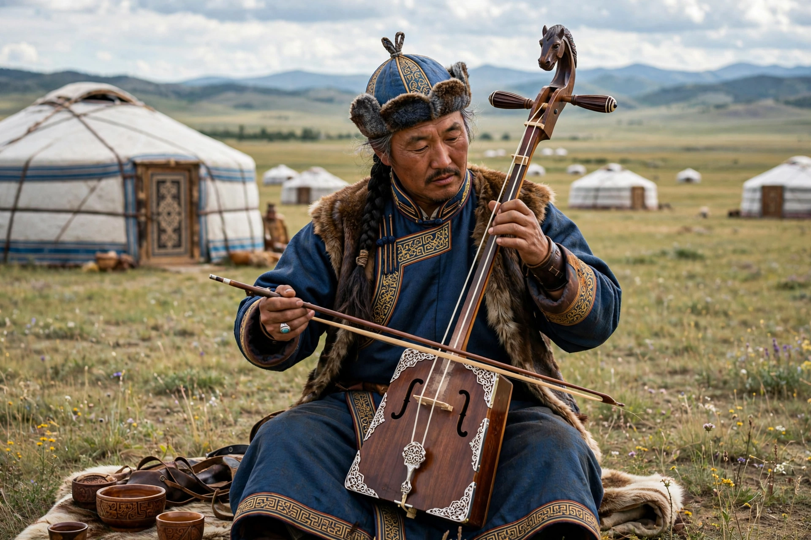

The music of Mongolia is shaped by the country's nomadic pastoral culture, its vast steppe landscapes and its shamanic and Buddhist traditions. Its best-known forms are khöömii (overtone or "throat" singing) and the morin khuur (horsehead fiddle), both inscribed by UNESCO on its Representative List of the Intangible Cultural Heritage of Humanity.

In khöömii, a single singer produces a low drone and simultaneously a clear, flute-like melody of overtones; styles include sygyt and kargyraa. The morin khuur — a trapezoidal wooden fiddle with two strings traditionally of horsehair, carved with a horse's head — accompanies song and dance and imitates the sounds of horses and nature. Long song (urtyn duu) is a grand, slow, highly melismatic genre sung at feasts, contrasted with short song (bogino duu). Instruments include the tovshuur lute, the yatga zither, the shanz three-stringed lute and the bamboo jaw harp. Epic singing recounting tales such as the Jangar and Gesar cycles accompanies ritual and celebration.
During the socialist period, Mongolia developed symphony orchestras, opera (at the State Academic Theatre in Ulaanbaatar) and the state Morin Khuur Ensemble. Since 1990, rock and pop bands such as Hurd and Soyol Erdene (Mongolia's first rock band), hip-hop artists, and folk-metal bands — most famously The Hu, whose "hunnu rock" with throat singing and traditional instruments went viral internationally in 2018–2019 — have blended tradition with global genres.